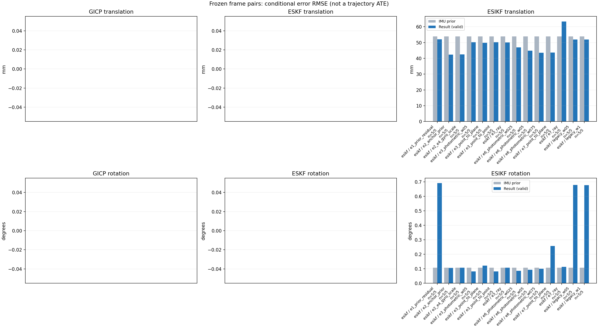

20261015_113028_roll_right · depth=disparity_cache · cache=54e748e6af5d1ef0fb6f
模型视差：/home/ubuntu22/slam/SIO_SLAM/models/tensorrt/disp_896x448_fp16.plan；engine SHA256=604cf6ac1f705c877260711730dd5d2d58c2a21f3020c03c668401ef7fb1e768。输入为生产裁剪与光照处理后的 RGB 0..255；此实验使用原始浮点像素视差，不应用完整前端的邻域视差后处理。
原始 ONNX SHA256：e9f49736a65d68d06681add463866b6defdf78fdd7f4f50f6cc941b682fdc0bc。
代价体图改写验证：ONNX Runtime 固定随机特征输入，最大绝对误差 0；该项检查图改写，完整模型精度仍需由录制数据评估。
配准代码版本：744ac2d993ae629b0cc44a3b1d995e04ab4fad48；观测生成版本：744ac2d993ae629b0cc44a3b1d995e04ab4fad48。
固定图像对与纯 IMU 先验；ESKF 回放固定 GICP 观测，ESIKF 直接读取点云。真值只用于此报告。
同时查看 converged 与 solver_status：上游默认 Stereo 在 max_iter / stopped_at_minimum 时也可能置 converged=true。valid 表示输入检查通过，不表示精度提升。欧氏 GICP 未提供独立的点距 RMSE，该列显示 NaN。
误差按每对图像的锚点计算，单位 m / degrees。此处 RMSE 不是全序列 ATE；末帧受同一锚点条件约束。NIS 与条件马氏距离是诊断量，少量相关图像对不能用于宣称协方差已校准。
全部指标 CSV · R / P 矩阵 CSV · Stereo 求解逐轮 CSV · ESIKF 逐轮轨迹 CSV · 末轮 H / R / K_pose 矩阵 CSV · 配置快照 · 矢量图
unflagged 排除纯惯性先验平移误差超过 50 mm 的图像对；whitened 为误差按协方差白化后的每自由度均值，协方差与实际误差相符时约为 1。
| stage | method | variant | valid | total | result_translation_rmse_m | result_rotation_rmse_deg | result_translation_median_m | result_rotation_median_deg | result_translation_rmse_unflagged_m | result_rotation_rmse_unflagged_deg | improved_translation | improved_rotation | posterior_whitened_by_P_rot_mean | posterior_whitened_by_P_trans_mean |
|---|---|---|---|---|---|---|---|---|---|---|---|---|---|---|
| esikf | esikf | e1_prior_residual | 5 | 5 | 0.052036 | 0.69054 | 0.0086339 | 0.30619 | 0.0072044 | 0.25277 | 1 | 1 | 662.93 | 2570.3 |
| esikf | esikf | e2_anchor_prior | 5 | 5 | 0.042312 | 0.10553 | 0.0021475 | 0.022851 | 0.0036261 | 0.11743 | 4 | 2 | 785.57 | 7563.6 |
| esikf | esikf | e2_e4_gyro_scale | 5 | 5 | 0.042459 | 0.10682 | 0.0017049 | 0.062526 | 0.0053639 | 0.11888 | 2 | 1 | 63.974 | 7572 |
| esikf | esikf | e3_photometric_w05 | 5 | 5 | 0.050285 | 0.082011 | 0.0016306 | 0.011233 | 0.0047583 | 0.091519 | 5 | 3 | 3.7864 | 1149.8 |
| esikf | esikf | e3_point_to_plane | 5 | 5 | 0.049892 | 0.12108 | 0.0016307 | 0.012752 | 0.0041384 | 0.13522 | 5 | 1 | 4.5697 | 1032 |
| esikf | esikf | e3_point_to_point | 5 | 5 | 0.050291 | 0.082 | 0.0016306 | 0.011207 | 0.004759 | 0.091508 | 5 | 3 | 3.7789 | 1150 |
| esikf | esikf | e3_ray | 5 | 5 | 0.05012 | 0.10769 | 0.0016325 | 0.0192 | 0.0049892 | 0.12002 | 5 | 1 | 4.7396 | 1026.5 |
| esikf | esikf | e6_photometric_w025 | 5 | 5 | 0.046996 | 0.086492 | 0.001526 | 0.020536 | 0.0050544 | 0.096155 | 3 | 2 | 27.243 | 2903.9 |
| esikf | esikf | e6_photometric_w05 | 5 | 5 | 0.044863 | 0.092603 | 0.0014505 | 0.0367 | 0.005184 | 0.10289 | 3 | 2 | 42.437 | 4528.9 |
| esikf | esikf | e6_photometric_w075 | 5 | 5 | 0.04349 | 0.099393 | 0.0014861 | 0.050691 | 0.0053121 | 0.11053 | 3 | 1 | 52.354 | 6105.7 |
| esikf | esikf | e7_point_to_plane | 5 | 5 | 0.043715 | 0.25705 | 0.0025627 | 0.020709 | 0.0038995 | 0.28725 | 3 | 1 | 37.341 | 1213.2 |
| esikf | esikf | e7_ray | 5 | 5 | 0.063392 | 0.1134 | 0.0035369 | 0.053343 | 0.0077591 | 0.12395 | 1 | 0 | 146.14 | 1417 |
| esikf | esikf | legacy_w05 | 5 | 5 | 0.051879 | 0.6775 | 0.0085974 | 0.19584 | 0.0063717 | 0.19802 | 3 | 2 | 313.15 | 1278.8 |
| esikf | esikf | legacy_w1 | 5 | 5 | 0.051918 | 0.67613 | 0.0086189 | 0.19302 | 0.0061903 | 0.19749 | 3 | 2 | 624.95 | 2556.6 |

| stage | case | method | variant | status | solver_status | inliers | converged | covariance_convention | covariance_from_hessian | fitness | registration_rmse_m | prior_trans_error_m | result_trans_error_m | prior_rot_error_deg | result_rot_error_deg | prior_flagged | R_rot_trace_rad2 | R_pos_trace_m2 | nis_regularized | posterior_whitened_by_P_rot | posterior_whitened_by_P_trans |
|---|---|---|---|---|---|---|---|---|---|---|---|---|---|---|---|---|---|---|---|---|---|
| esikf | static_start | esikf | legacy_w1 | updated | converged | 9346 | 1 | 1 | 0 | 0 | 7.6181e-05 | 0.00044462 | 0.0061233 | 0.012793 | 0 | 1.4895e-07 | 8.9459e-07 | nan | 0.21553 | 0.2014 | |
| esikf | static_start | esikf | legacy_w05 | updated | converged | 9346 | 1 | 1 | 0 | 0 | 7.6181e-05 | 0.00044621 | 0.0061233 | 0.012821 | 0 | 2.978e-07 | 1.7884e-06 | nan | 0.10806 | 0.10139 | |
| esikf | static_start | esikf | e1_prior_residual | updated | converged | 9346 | 1 | 1 | 0 | 0 | 7.6181e-05 | 0.00044902 | 0.0061233 | 0.013049 | 0 | 1.4895e-07 | 8.9463e-07 | nan | 0.22424 | 0.20554 | |
| esikf | static_start | esikf | e2_anchor_prior | updated | converged | 9346 | 1 | 1 | 0 | 0 | 7.6181e-05 | 5.5908e-05 | 0.0061233 | 0.0064795 | 0 | 1.4895e-07 | 8.9459e-07 | nan | 0.76514 | 0.045334 | |
| esikf | static_start | esikf | e2_e4_gyro_scale | updated | converged | 9346 | 1 | 1 | 0 | 0 | 7.6181e-05 | 5.5908e-05 | 0.0061233 | 0.0064796 | 0 | 1.4895e-07 | 8.9459e-07 | nan | 0.76502 | 0.045332 | |
| esikf | static_start | esikf | e6_photometric_w075 | updated | converged | 9346 | 1 | 1 | 0 | 0 | 7.6181e-05 | 4.6654e-05 | 0.0061233 | 0.0064262 | 0 | 1.9858e-07 | 1.1926e-06 | nan | 0.66968 | 0.035503 | |
| esikf | static_start | esikf | e6_photometric_w05 | updated | converged | 9346 | 1 | 1 | 0 | 0 | 7.6181e-05 | 4.3121e-05 | 0.0061233 | 0.0063701 | 0 | 2.978e-07 | 1.7884e-06 | nan | 0.56756 | 0.030425 | |
| esikf | static_start | esikf | e6_photometric_w025 | updated | converged | 9346 | 1 | 1 | 0 | 0 | 7.6181e-05 | 5.1219e-05 | 0.0061233 | 0.0062921 | 0 | 5.9522e-07 | 3.5734e-06 | nan | 0.45783 | 0.031706 | |
| esikf | static_start | esikf | e7_ray | updated | converged | 9346 | 1 | 1 | 0 | 0 | 7.6181e-05 | 8.1913e-05 | 0.0061233 | 0.0066607 | 0 | 0.060263 | 6.9153e-05 | nan | 0.4053 | 0.063335 | |
| esikf | static_start | esikf | e7_point_to_plane | updated | converged | 9346 | 1 | 1 | 0 | 0 | 7.6181e-05 | 0.00013601 | 0.0061233 | 0.0092159 | 0 | 1.5387e-06 | 5.0021e-06 | nan | 0.81893 | 0.12747 | |
| esikf | static_start | esikf | e3_point_to_point | updated | converged | 9346 | 1 | 1 | 0 | 0 | 7.6181e-05 | 7.385e-05 | 0.0061233 | 0.0061344 | 0 | 8.155e-06 | 5.2924e-05 | nan | 0.34742 | 0.042144 | |
| esikf | static_start | esikf | e3_photometric_w05 | updated | converged | 9346 | 1 | 1 | 0 | 0 | 7.6181e-05 | 7.3849e-05 | 0.0061233 | 0.0061345 | 0 | 8.1509e-06 | 5.3007e-05 | nan | 0.34743 | 0.042143 | |
| esikf | static_start | esikf | e3_ray | updated | converged | 9346 | 1 | 1 | 0 | 0 | 7.6181e-05 | 7.545e-05 | 0.0061233 | 0.006126 | 0 | 5.3345 | 0.0060375 | nan | 0.33969 | 0.042953 | |
| esikf | static_start | esikf | e3_point_to_plane | updated | converged | 9346 | 1 | 1 | 0 | 0 | 7.6181e-05 | 7.2608e-05 | 0.0061233 | 0.0061934 | 0 | 7.5815e-05 | 0.00015081 | nan | 0.34755 | 0.040976 | |
| esikf | sync_motion | esikf | legacy_w1 | updated | converged | 9741 | 1 | 1 | 0 | 0 | 0.00070607 | 0.0086189 | 0.0094797 | 0.34152 | 0 | 1.4433e-07 | 8.5521e-07 | nan | 271.52 | 84.445 | |
| esikf | sync_motion | esikf | legacy_w05 | updated | converged | 9740 | 1 | 1 | 0 | 0 | 0.00070607 | 0.0085974 | 0.0094797 | 0.34114 | 0 | 2.8861e-07 | 1.7099e-06 | nan | 135.58 | 42.023 | |
| esikf | sync_motion | esikf | e1_prior_residual | updated_not_converged | max_iterations | 9738 | 0 | 1 | 0 | 0 | 0.00070607 | 0.0086339 | 0.0094797 | 0.34109 | 0 | 1.4439e-07 | 8.5577e-07 | nan | 271.33 | 84.609 | |
| esikf | sync_motion | esikf | e2_anchor_prior | updated_not_converged | max_iterations | 9646 | 0 | 1 | 0 | 0 | 0.00070607 | 0.0021475 | 0.0094797 | 0.014813 | 0 | 1.4793e-07 | 8.7216e-07 | nan | 19.494 | 15.341 | |
| esikf | sync_motion | esikf | e2_e4_gyro_scale | updated_not_converged | max_iterations | 9643 | 0 | 1 | 0 | 0 | 0.00070607 | 0.00095753 | 0.0094797 | 0.062526 | 0 | 1.4883e-07 | 8.8615e-07 | nan | 24.592 | 2.1724 | |
| esikf | sync_motion | esikf | e6_photometric_w075 | updated_not_converged | max_iterations | 9643 | 0 | 1 | 0 | 0 | 0.00070607 | 0.0012 | 0.0094797 | 0.050691 | 0 | 1.981e-07 | 1.1759e-06 | nan | 14.737 | 2.7435 | |
| esikf | sync_motion | esikf | e6_photometric_w05 | updated_not_converged | max_iterations | 9637 | 0 | 1 | 0 | 0 | 0.00070607 | 0.0014117 | 0.0094797 | 0.0367 | 0 | 2.9713e-07 | 1.7594e-06 | nan | 6.8443 | 2.9069 | |
| esikf | sync_motion | esikf | e6_photometric_w025 | updated_not_converged | max_iterations | 9635 | 0 | 1 | 0 | 0 | 0.00070607 | 0.0014081 | 0.0094797 | 0.020536 | 0 | 5.9223e-07 | 3.4809e-06 | nan | 1.867 | 1.8693 | |
| esikf | sync_motion | esikf | e7_ray | updated | converged | 9592 | 1 | 1 | 0 | 0 | 0.00070607 | 0.0035369 | 0.0094797 | 0.011492 | 0 | 0.026768 | 2.4813e-05 | nan | 0.38279 | 3.7431 | |
| esikf | sync_motion | esikf | e7_point_to_plane | updated | converged | 9583 | 1 | 1 | 0 | 0 | 0.00070607 | 0.0025627 | 0.0094797 | 0.020709 | 0 | 1.4062e-06 | 5.0037e-06 | nan | 1.2834 | 2.6724 | |
| esikf | sync_motion | esikf | e3_point_to_point | updated | converged | 9602 | 1 | 1 | 0 | 0 | 0.00070607 | 0.00052085 | 0.0094797 | 0.0091845 | 0 | 8.2232e-06 | 5.2518e-05 | nan | 0.25969 | 0.094018 | |
| esikf | sync_motion | esikf | e3_photometric_w05 | updated | converged | 9602 | 1 | 1 | 0 | 0 | 0.00070607 | 0.0005201 | 0.0094797 | 0.0091858 | 0 | 8.2198e-06 | 5.2608e-05 | nan | 0.25979 | 0.093887 | |
| esikf | sync_motion | esikf | e3_ray | updated | converged | 9601 | 1 | 1 | 0 | 0 | 0.00070607 | 0.0006829 | 0.0094797 | 0.0095575 | 0 | 3.4198 | 0.0031457 | nan | 0.25354 | 0.10634 | |
| esikf | sync_motion | esikf | e3_point_to_plane | updated | converged | 9600 | 1 | 1 | 0 | 0 | 0.00070607 | 0.00066487 | 0.0094797 | 0.0097146 | 0 | 6.8444e-05 | 0.00014936 | nan | 0.26319 | 0.10501 | |
| esikf | main_motion | esikf | legacy_w1 | updated | converged | 12070 | 1 | 1 | 0 | 0 | 0.001643 | 0.0014188 | 0.075969 | 0.044248 | 0 | 1.1952e-07 | 8.8752e-07 | nan | 7.8102 | 2.6064 | |
| esikf | main_motion | esikf | legacy_w05 | updated | converged | 12070 | 1 | 1 | 0 | 0 | 0.001643 | 0.00142 | 0.075969 | 0.044275 | 0 | 2.39e-07 | 1.7746e-06 | nan | 3.9113 | 1.3058 | |
| esikf | main_motion | esikf | e1_prior_residual | updated_not_converged | max_iterations | 12116 | 0 | 1 | 0 | 0 | 0.001643 | 0.0043755 | 0.075969 | 0.30619 | 0 | 1.175e-07 | 8.566e-07 | nan | 200.41 | 26.314 | |
| esikf | main_motion | esikf | e2_anchor_prior | updated | converged | 12074 | 1 | 1 | 0 | 0 | 0.001643 | 0.001562 | 0.075969 | 0.075716 | 0 | 1.1841e-07 | 8.6797e-07 | nan | 1718.4 | 8.1501 | |
| esikf | main_motion | esikf | e2_e4_gyro_scale | updated_not_converged | max_iterations | 12091 | 0 | 1 | 0 | 0 | 0.001643 | 0.0017049 | 0.075969 | 0.10221 | 0 | 1.1852e-07 | 8.6966e-07 | nan | 28.664 | 6.1948 | |
| esikf | main_motion | esikf | e6_photometric_w075 | updated | converged | 12089 | 1 | 1 | 0 | 0 | 0.001643 | 0.0014861 | 0.075969 | 0.076986 | 0 | 1.582e-07 | 1.1622e-06 | nan | 15.216 | 3.9059 | |
| esikf | main_motion | esikf | e6_photometric_w05 | updated | converged | 12089 | 1 | 1 | 0 | 0 | 0.001643 | 0.0014505 | 0.075969 | 0.056019 | 0 | 2.3703e-07 | 1.7418e-06 | nan | 8.8487 | 2.9774 | |
| esikf | main_motion | esikf | e6_photometric_w025 | updated | converged | 12080 | 1 | 1 | 0 | 0 | 0.001643 | 0.001526 | 0.075969 | 0.047187 | 0 | 4.7431e-07 | 3.4867e-06 | nan | 5.2566 | 2.476 | |
| esikf | main_motion | esikf | e7_ray | updated | converged | 12066 | 1 | 1 | 0 | 0 | 0.001643 | 0.0013482 | 0.075969 | 0.076252 | 0 | 0.023215 | 2.5372e-05 | nan | 3.0861 | 2.2428 | |
| esikf | main_motion | esikf | e7_point_to_plane | updated | converged | 12061 | 1 | 1 | 0 | 0 | 0.001643 | 0.0014606 | 0.075969 | 0.032564 | 0 | 1.2114e-06 | 5.0499e-06 | nan | 1.2768 | 2.6812 | |
| esikf | main_motion | esikf | e3_point_to_point | updated | converged | 12070 | 1 | 1 | 0 | 0 | 0.001643 | 0.0016306 | 0.075969 | 0.072819 | 0 | 6.544e-06 | 5.2506e-05 | nan | 3.4182 | 1.976 | |
| esikf | main_motion | esikf | e3_photometric_w05 | updated | converged | 12070 | 1 | 1 | 0 | 0 | 0.001643 | 0.0016306 | 0.075969 | 0.072821 | 0 | 6.5415e-06 | 5.2599e-05 | nan | 3.4188 | 1.976 | |
| esikf | main_motion | esikf | e3_ray | updated | converged | 12070 | 1 | 1 | 0 | 0 | 0.001643 | 0.0016325 | 0.075969 | 0.075972 | 0 | 2.0428 | 0.0022074 | nan | 3.0632 | 1.9336 | |
| esikf | main_motion | esikf | e3_point_to_plane | updated | converged | 12070 | 1 | 1 | 0 | 0 | 0.001643 | 0.0016307 | 0.075969 | 0.074242 | 0 | 5.9792e-05 | 0.00015222 | nan | 2.9894 | 1.9639 | |
| esikf | main_motion_long | esikf | legacy_w1 | updated | converged | 12274 | 1 | 1 | 0 | 0 | 0.0098867 | 0.0087627 | 0.22748 | 0.19302 | 0 | 1.2802e-07 | 9.1696e-07 | nan | 121.3 | 89.199 | |
| esikf | main_motion_long | esikf | legacy_w05 | updated | converged | 12287 | 1 | 1 | 0 | 0 | 0.0098867 | 0.0092878 | 0.22748 | 0.19584 | 0 | 2.5404e-07 | 1.8094e-06 | nan | 59.584 | 49.734 | |
| esikf | main_motion_long | esikf | e1_prior_residual | updated_not_converged | max_iterations | 12304 | 0 | 1 | 0 | 0 | 0.0098867 | 0.010664 | 0.22748 | 0.21287 | 0 | 1.2653e-07 | 9.0324e-07 | nan | 123.03 | 128.28 | |
| esikf | main_motion_long | esikf | e2_anchor_prior | updated | converged | 12226 | 1 | 1 | 0 | 0 | 0.0098867 | 0.0067483 | 0.22748 | 0.22172 | 0 | 1.304e-07 | 9.4099e-07 | nan | 2043.6 | 69.803 | |
| esikf | main_motion_long | esikf | e2_e4_gyro_scale | updated_not_converged | max_iterations | 12305 | 0 | 1 | 0 | 0 | 0.0098867 | 0.010548 | 0.22748 | 0.20527 | 0 | 1.2681e-07 | 9.0698e-07 | nan | 120.8 | 129.66 | |
| esikf | main_motion_long | esikf | e6_photometric_w075 | updated_not_converged | max_iterations | 12303 | 0 | 1 | 0 | 0 | 0.0098867 | 0.010451 | 0.22748 | 0.20082 | 0 | 1.6909e-07 | 1.2092e-06 | nan | 87.46 | 96.421 | |
| esikf | main_motion_long | esikf | e6_photometric_w05 | updated_not_converged | max_iterations | 12298 | 0 | 1 | 0 | 0 | 0.0098867 | 0.010168 | 0.22748 | 0.19447 | 0 | 2.541e-07 | 1.8194e-06 | nan | 56.731 | 62.031 | |
| esikf | main_motion_long | esikf | e6_photometric_w025 | updated_not_converged | max_iterations | 12294 | 0 | 1 | 0 | 0 | 0.0098867 | 0.0098932 | 0.22748 | 0.18519 | 0 | 5.0876e-07 | 3.6363e-06 | nan | 28.333 | 31.021 | |
| esikf | main_motion_long | esikf | e7_ray | updated_not_converged | max_iterations | 12331 | 0 | 1 | 0 | 0 | 0.0098867 | 0.015049 | 0.22748 | 0.23551 | 0 | 0.009292 | 1.0282e-05 | nan | 0.79658 | 71.268 | |
| esikf | main_motion_long | esikf | e7_point_to_plane | updated_not_converged | max_iterations | 12302 | 0 | 1 | 0 | 0 | 0.0098867 | 0.0072184 | 0.22748 | 0.57312 | 0 | 1.2499e-06 | 4.7951e-06 | nan | 96.953 | 19.68 | |
| esikf | main_motion_long | esikf | e3_point_to_point | updated_not_converged | max_iterations | 12268 | 0 | 1 | 0 | 0 | 0.0098867 | 0.0093626 | 0.22748 | 0.16754 | 0 | 7.0769e-06 | 5.5017e-05 | nan | 3.0027 | 3.495 | |
| esikf | main_motion_long | esikf | e3_photometric_w05 | updated_not_converged | max_iterations | 12268 | 0 | 1 | 0 | 0 | 0.0098867 | 0.0093611 | 0.22748 | 0.16756 | 0 | 7.0738e-06 | 5.511e-05 | nan | 3.0053 | 3.491 | |
| esikf | main_motion_long | esikf | e3_ray | updated | converged | 12267 | 1 | 1 | 0 | 0 | 0.0098867 | 0.0098199 | 0.22748 | 0.22741 | 0 | 0.9419 | 0.0011349 | nan | 0.73765 | 2.5527 | |
| esikf | main_motion_long | esikf | e3_point_to_plane | updated | converged | 12253 | 1 | 1 | 0 | 0 | 0.0098867 | 0.0080871 | 0.22748 | 0.25979 | 0 | 6.301e-05 | 0.00014655 | nan | 1.708 | 2.4532 | |
| esikf | static_end | esikf | legacy_w1 | updated_not_converged | max_iterations | 9099 | 0 | 1 | 0 | 0 | 0.1201 | 0.11543 | 0.0045728 | 1.4594 | 1 | 1.7823e-07 | 1.1194e-06 | nan | 2723.9 | 12607 | |
| esikf | static_end | esikf | legacy_w05 | updated_not_converged | max_iterations | 9101 | 0 | 1 | 0 | 0 | 0.1201 | 0.1153 | 0.0045728 | 1.4623 | 1 | 3.5596e-07 | 2.2346e-06 | nan | 1366.6 | 6300.7 | |
| esikf | static_end | esikf | e1_prior_residual | updated_not_converged | max_iterations | 9098 | 0 | 1 | 0 | 0 | 0.1201 | 0.11546 | 0.0045728 | 1.459 | 1 | 1.7826e-07 | 1.1195e-06 | nan | 2719.6 | 12612 | |
| esikf | static_end | esikf | e2_anchor_prior | updated_not_converged | max_iterations | 8996 | 0 | 1 | 0 | 0 | 0.1201 | 0.094334 | 0.0045728 | 0.022851 | 1 | 2.0322e-07 | 1.4606e-06 | nan | 145.64 | 37725 | |
| esikf | static_end | esikf | e2_e4_gyro_scale | updated_not_converged | max_iterations | 8996 | 0 | 1 | 0 | 0 | 0.1201 | 0.094334 | 0.0045728 | 0.022847 | 1 | 2.0322e-07 | 1.4606e-06 | nan | 145.05 | 37722 | |
| esikf | static_end | esikf | e6_photometric_w075 | updated_not_converged | max_iterations | 8961 | 0 | 1 | 0 | 0 | 0.1201 | 0.096664 | 0.0045728 | 0.022982 | 1 | 2.7315e-07 | 1.978e-06 | nan | 143.69 | 30425 | |
| esikf | static_end | esikf | e6_photometric_w05 | updated_not_converged | max_iterations | 8950 | 0 | 1 | 0 | 0 | 0.1201 | 0.09978 | 0.0045728 | 0.023084 | 1 | 4.1921e-07 | 3.0696e-06 | nan | 139.19 | 22576 | |
| esikf | static_end | esikf | e6_photometric_w025 | updated_not_converged | max_iterations | 8938 | 0 | 1 | 0 | 0 | 0.1201 | 0.1046 | 0.0045728 | 0.020534 | 1 | 8.4026e-07 | 5.8254e-06 | nan | 100.3 | 14484 | |
| esikf | static_end | esikf | e7_ray | updated_not_converged | max_iterations | 8372 | 0 | 1 | 0 | 0 | 0.1201 | 0.1409 | 0.0045728 | 0.053343 | 1 | 0.0043444 | 7.3531e-05 | nan | 726.03 | 7007.5 | |
| esikf | static_end | esikf | e7_point_to_plane | updated_not_converged | max_iterations | 9050 | 0 | 1 | 0 | 0 | 0.1201 | 0.097438 | 0.0045728 | 0.017827 | 1 | 1.8357e-06 | 6.4525e-06 | nan | 86.371 | 6040.7 | |
| esikf | static_end | esikf | e3_point_to_point | updated_not_converged | max_iterations | 8978 | 0 | 1 | 0 | 0 | 0.1201 | 0.11205 | 0.0045728 | 0.011207 | 1 | 1.2531e-05 | 9.9987e-05 | nan | 11.867 | 5744.4 | |
| esikf | static_end | esikf | e3_photometric_w05 | updated_not_converged | max_iterations | 8977 | 0 | 1 | 0 | 0 | 0.1201 | 0.11204 | 0.0045728 | 0.011233 | 1 | 1.2524e-05 | 0.00010009 | nan | 11.901 | 5743.3 | |
| esikf | static_end | esikf | e3_ray | updated_not_converged | max_iterations | 8875 | 0 | 1 | 0 | 0 | 0.1201 | 0.11163 | 0.0045728 | 0.0192 | 1 | 0.25046 | 0.0026353 | nan | 19.304 | 5127.7 | |
| esikf | static_end | esikf | e3_point_to_plane | updated_not_converged | max_iterations | 9006 | 0 | 1 | 0 | 0 | 0.1201 | 0.11125 | 0.0045728 | 0.012752 | 1 | 9.7515e-05 | 0.00022562 | nan | 17.54 | 5155.3 |